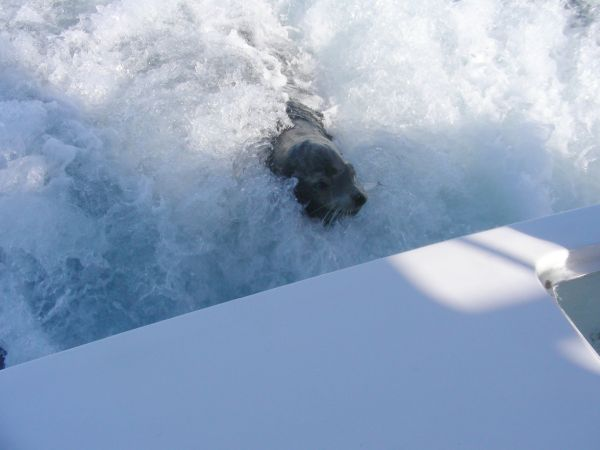
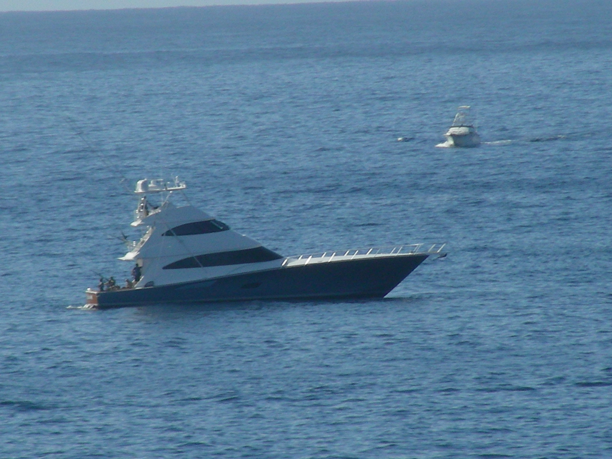
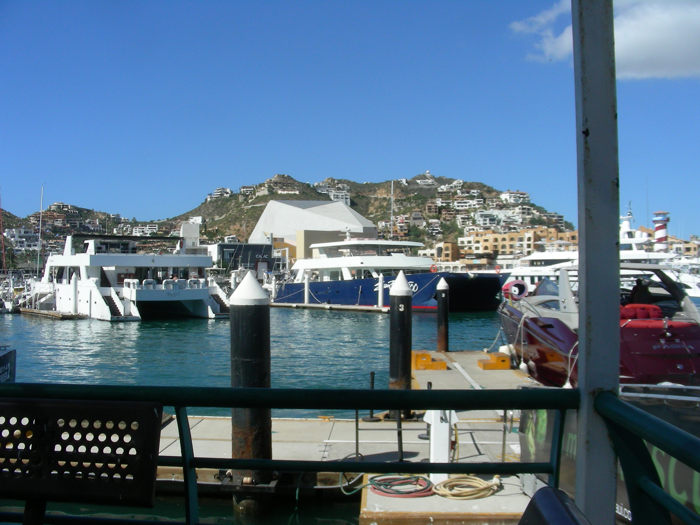
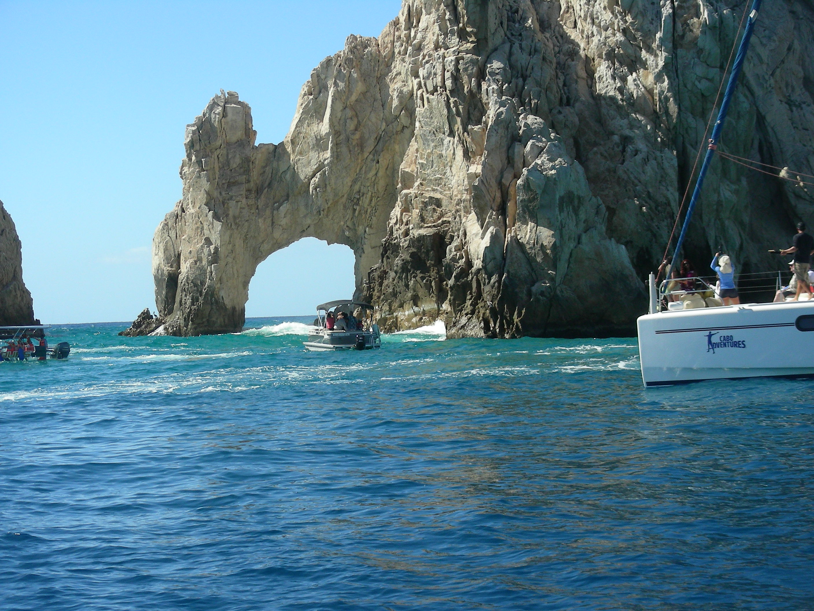
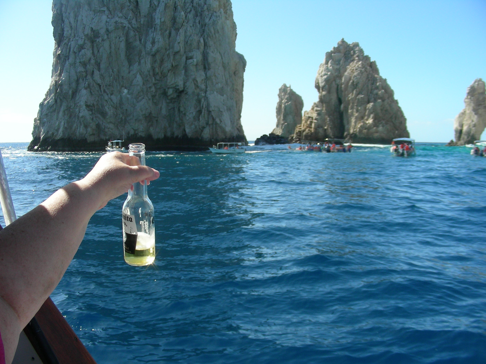
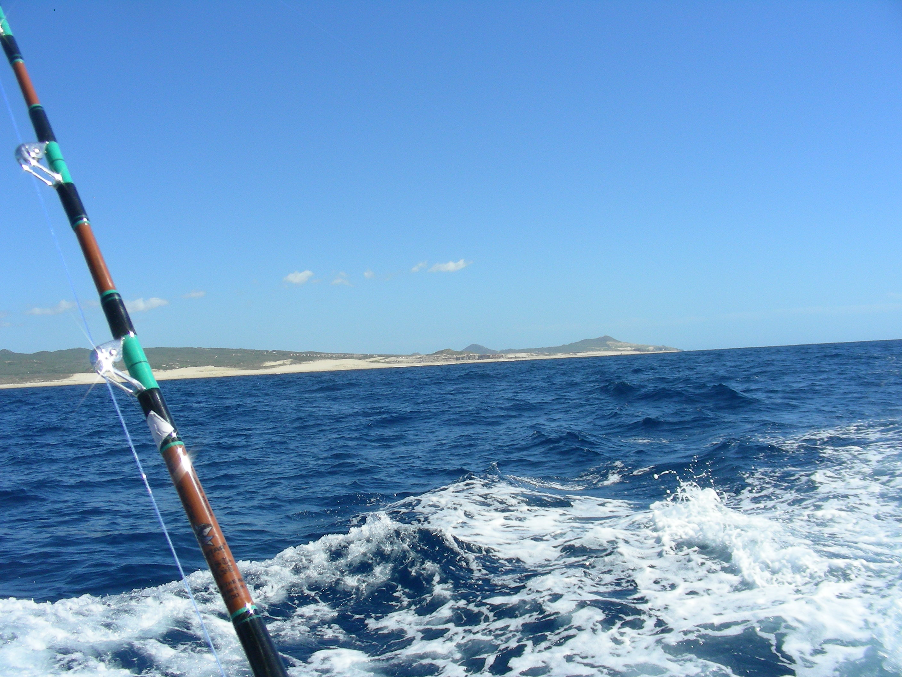
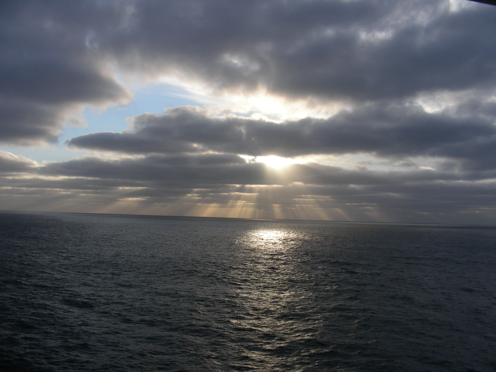

2 Stops
On this cruise the ship stopped at two ports, for people to go ashore and do whatever. The first stop was at Cabo San Lucas, located at the far south end tip of the Baja Peninsula in Mexico. The second stop was, on the way back, at Ensenada, Mexico(north end of Baja Peninsula, south of Tijuana), which is south of Los Angeles. The cruise offers different types of excursions available at these ports. Charter Boat fishing was offered as an excursion in Cabo San Lucas. I had fished out of Cabo a few times and had tremendous success with Blue Marlin Fishing, so we decided to sign up for that. We didn’t know what to expect, since the cruise doesn’t offer many details. Just the basics you need to know; And, of course, the price. We booked this trip with a very open mind, not expecting too much. No matter what, we would experience a day on the open water, which we always enjoy.
Cabo San Lucas Charter Fishing: First Stop
On the day of the trip all the excursion people met in the Stardust Theater(Beautiful Concert Hall). They checked everyone in and set us up in shuttles to take us to our different destinations. They were very organized and everything went very smoothly. They took us to the Charter Boat docks and had us wait patiently for our assigned boat. At this point we noticed that including us there were, apparently, only 8 people signed up for Fishing. We all met each other and had a nice conversation. We wondered how they were going to split us up, since a Charter Boat usually takes a maximum of 6 people. After a short wait, we were split up into 2 groups of 4. We were paired with a wonderful couple from California.
As we all walked down the dock we all wondered what type of boat they would put us on. There were large charter boats and well as smaller ones, like 18 foot center consoles, all up and down the pier. We figured they would probably put us in one of the smaller boats (which cost less money), but were pleasantly surprised to be assigned to a beautiful 40 foot Charter Boat, fully equipped with top notch deep sea fishing gear.
We met the Captain and mate and found them to be very friendly and accommodating. We were provide with lots of beer, pop, water, and sandwiches. The Captain asked us what type of fishing we were looking for. Totally in unison, the other couple and I said “Marlin!” We set out to sea on a beautiful day.
80 degree weather, calm seas, great company with a ton of beer and great food, but sadly, no fish. Blue Marlin can travel up to 70 m.p.h. , so when there in your area, chances are great for a hook up, but when they’re not, (70m.p.h. to another location), they’re not.
You might wonder why you would fish for Blue Marlin, if you’re not sure they’re around. Simple answer, from me anyway, is that when your trolling for Marlin, you use large squid like lures with big hooks. (Years ago we called them feathers). While fishing for Big, Blue Marlin, you also have a great chance of catching other large fish like Sailfish, Dorado, Striped Marlin and a variety of Tunas, and more. The fact that we didn’t catch anything, or even raise (see) a fish is unusual; But, that’s fishing. The Captain and Crew were top notch and did everything they could to catch us fish. I know because in my past adventures (Occupation), I was a charter captain.

But a seal did follow us into the harbor. How cool!!
Truly Beautiful
E      nsenada: 2nd Stop And Trip Conclusion
On the way back to L.A. the ship docked in Ensenada. You could leave the ship, go on excursions, or just look around. We decided to stay on board and relax.
We hadn’t decided what route we were going to take home, so we talked about it and decided to go home via one of our favorite spots, Memphis, Tn. This route was just basically taking Interstate 40 all the way across to Memphis. We figured we’d check out some stops along the way.
The ship docked in the morning and we got ashore quickly, without any delays. The Cruise was definitely a thumbs up experience. We recommend it for Outlaw Country Fans. Our car was parked real close by. We loaded up and headed for Memphis.